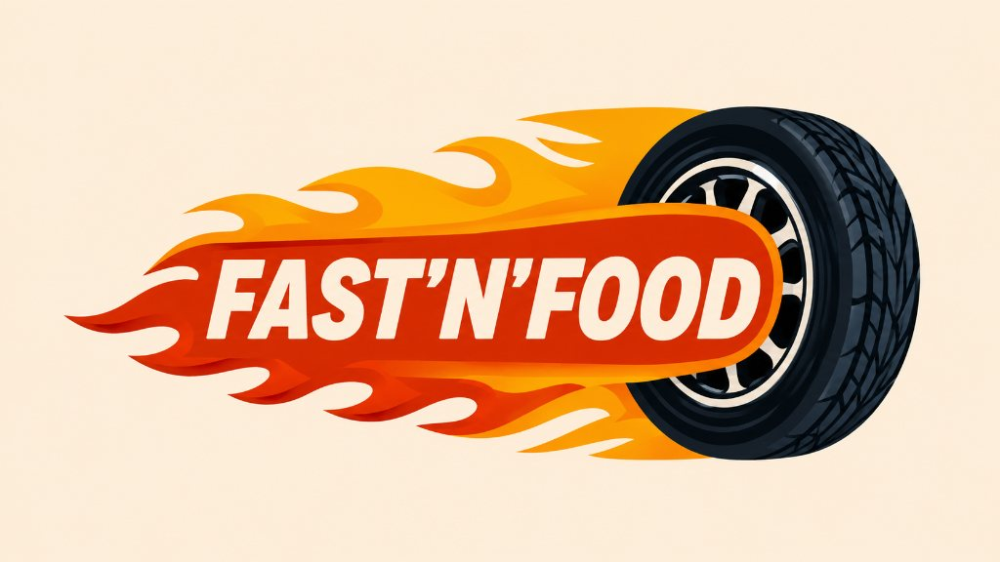
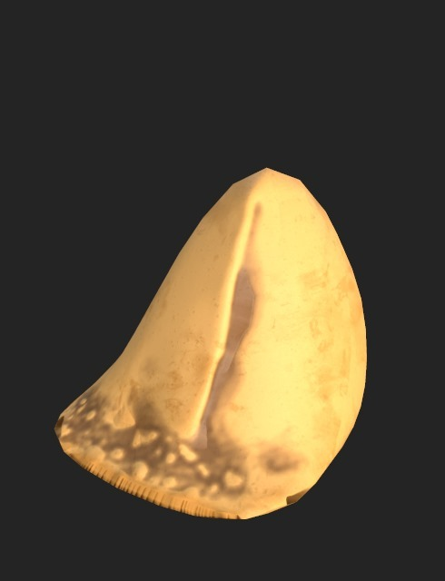
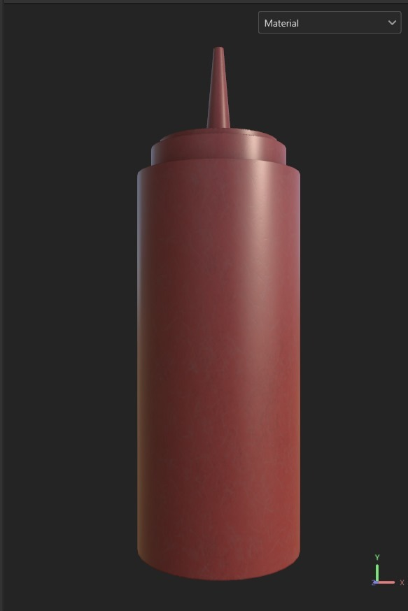
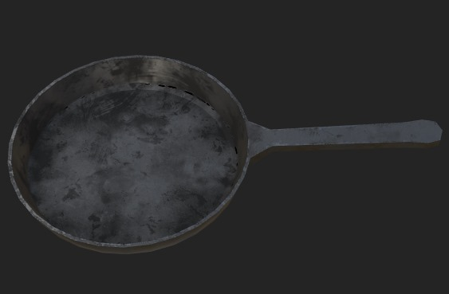
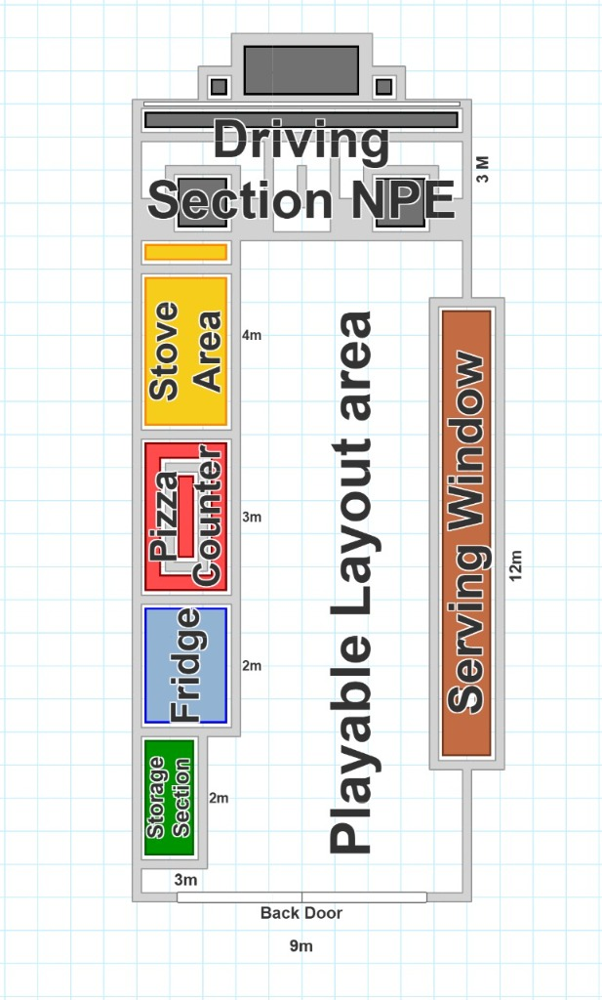

1. Project Vision
Fast and Food is a high-speed PC cooking and logistics simulation game about running an illegal food truck. The game tests the player's coordination through three distinct core gameplay phases: collecting raw ingredients from containment sites, combining ingredients at prep stations into custom packages, and physically throwing completed packaged orders to target customers along the road.
As a Gameplay & Systems Programmer on this team project, I engineered the core cooking engine and state tracking systems. This required designing a robust, non-polling, event-driven architecture that tracks cooking conditions, manages visual state changes, and calculates dynamic quality ratings for assembled items. Additionally, I took on art integration responsibilities: modeling the food 3D assets, designing the spatial layout for the interior of the truck, and managing the overall project asset database.
2. Technical Architecture & Module Structure
The game modules are divided to isolate the physical interaction of cooking utensils from the food state data and packaging solvers:
Cooking & Economic Systems
- Utensil Event Broker
- Food State Component
- Dynamic Material Instance
- Thermal Accumulator
- Rating Struct Evaluator
- Fuel Depletion Component
- Incremental Economic Penalty
- Customer Rating & Tip Broker
Order Assembly & Pack
- Ingredient Gatherer
- Assembly Station Solver
- Packaging Box Broker
- Collision Handshake
Integration & Asset Pipeline
- Projectile Throw Handler
- Interior Truck Layout Design
- Asset Registry & Folder Structure
- Order Dispatcher [Teammate System]
- Target Delivery Solver [Teammate System]
- Score Calculation [Teammate System]
3. Key Technical Systems — Deep Dive
3.1 Event-Driven Cooking State Engine Delegates & Materials
Developing a cooking system where food transitions dynamically through multiple states (Uncooked → Undercooked → Perfectly Cooked → Burned) when placed on cooking utensils (stoves, griddles, fryers). The engine had to avoid heavy update loops (Tick) for performance, keep systems decoupled, and handle dynamic visual feedback to indicate current cook status.
Implemented a decoupled, event-driven state model utilizing Unreal Engine Delegate Bindings and dynamic visual parameter scaling:
- Delegate-Driven Thermal Broker: Rather than the food actor constantly polling the utensil's state, utensils act as broadcasters. Placing food on a utensil registers the food's thermal interface to the utensil's OnHeatEmitted Event Dispatcher. Utensils only emit events when active, removing unnecessary frame-tick overhead.
-
Discrete State Machine: Internal thermal accumulators convert heat into cooked percentage. When specific thresholds are crossed, the system executes discrete state changes:
▪ Uncooked: Raw state, initial rating multiplier.
▪ Undercooked: Moderate multiplier, penalizes score.
▪ Perfectly Cooked: Optimal state, maximizes customer rating.
▪ Burned: Ruined state, zero or negative rating multiplier. - Dynamic Material Instances (Visual Cooking): To display the cooking process without frame-heavy mesh swaps, a parent material was designed using scalar parameters for color tint and noise-mask carbonization. When heat events occur, the food updates its Dynamic Material Instance, blending colors from raw hue to golden-brown, and eventually to a charred black texture.
3.2 Food Item Packaging & Data Registration Container Structs
Managing how cooked food actors are combined inside a delivery bag. Stacking multiple distinct 3D mesh actors inside the bag would cause physics collisions to glitch, decrease performance, and complicate data management for order checks.
Created a transition-based packaging solver that collapses physical actors into light data representations:
- Actor Deactivation & Registration: When a food actor is placed inside the bag, its physical representation (the actor mesh) is immediately destroyed/disabled. Its cooked data parameters (state enum, cook rating, and ID) are registered inside a dynamic array of C++ structs on the bag actor.
- Visual Containment: This allows the bag to manage the data overhead of multiple ingredients as a single physical entity, preventing physics collisions from glitching inside the package asset.
3.3 Physics-Based Delivery Projectile Launch Physics & Collisions
Launching the packaged delivery bag out of the truck window to delivery zones. The package needed custom launch physics, input force scaling, and custom collision profiles so it wouldn't bounce inside the truck and disrupt controls.
Programmed the projectile launch mechanics using a customized ProjectileMovementComponent:
- Launch Force & Collision Routing: Calculated force vectors based on player aim inputs. Designed a custom collision channel that ignores the truck's interior assets, preventing self-collision bugs, but registers hits on external targets.
- System Handoff Interface: Designed the projectile to expose its registered food data array on overlap, enabling teammate systems (such as the customer queue and vehicle track) to poll the delivery data and calculate scores on receipt.
3.4 3D Art Pipeline & Asset Modeling Asset Management
Managing and optimizing a dense collection of custom cooking utensils, food assets, and truck interior props. The models needed to be lightweight for real-time PC performance while maintaining a clean, stylized visual theme.
Modeled 3D food assets and structured the art import pipeline within Unreal Engine:
- Asset Design & Texturing: Created stylized, low-poly 3D models (such as the food items, squeeze bottles, and cooking pans) to ensure instant visual readability during high-stress gameplay.
- Asset Registry & Optimization: Structured a strict folder hierarchy for models, materials, textures, and Blueprints. Organized imports and naming conventions, minimizing reference errors and managing dependencies across the team.



3.5 Fuel Depletion & Incremental Penalty Solver Resource Management
Creating a persistent resource threat (fuel) that depletes in real-time. When exhausted, the system must deduct funds, scaling the financial penalty progressively to simulate rising resource costs and push players to maintain high cooking efficiency.
Programmed a timer-based resource manager tied directly to the player's wallet:
- Real-Time Fuel Depletion: A ticking component tracks current fuel capacity. When depletion reaches 0, the system triggers a cash deduction event.
- Incremental Scaling Penalty: To scale difficulty, each consecutive fuel exhaustion increments a penalty multiplier. This increases the amount deducted every time the player fails to restock, compounding the economic stakes.
3.6 Dynamic Customer Rating & Tip Broker Score & Wallet Modifiers
Designing a payout system that translates the physical quality of delivered food (state ratings) into direct gameplay rewards (tips), incentivizing optimal preparation over fast but sloppy delivery.
Implemented a payout-adjuster component that reads packaged data arrays:
- Rating-Based Scaling: When a package is received, the system evaluates the registered state metrics of all cooked items inside.
- Tip Rewards: High-quality items (e.g. perfectly cooked) trigger percentage-based tip modifiers, boosting the base order payout. Poorly cooked or burned items bypass the tip logic and apply negative modifiers, linking game feel directly to financial performance.
3.7 Truck Spatial Layout & Level Design Level Design
Designing a functional level layout inside the limited space of a food truck. The workstation positioning had to support high-stress, rapid gameplay where the player must gather ingredients, cook, package, and serve efficiently without spatial bottlenecks.
Engineered a linear layout blueprint mapping dedicated workstations to optimize the player's movement pipeline:
- Station Pipeline Layout: Arranged stations sequentially (Storage ➔ Fridge ➔ Pizza Counter ➔ Stove Area) on the left side of the vehicle, running parallel to the Serving Window on the right. This layout minimizes unnecessary back-and-forth movement.
- Prototyping Dimensions: Mapped the 9m x 12m vehicle interior space to guarantee adequate player collision space in the center lane, ensuring gameplay flow and preventing camera clipping issues.

4. Communication Flow Model
The cooking event architecture establishes clean communication boundaries between physical utensils, state evaluation, and presentation layers:
Decoupling Advantage: The Cooking Utensil contains zero references to food item classes or recipes. It simply broadcasts thermal values. Any actor containing a UFoodStateComponent can be placed on the stove, fryer, or griddle and will instantly respond, demonstrating excellent system extensibility.